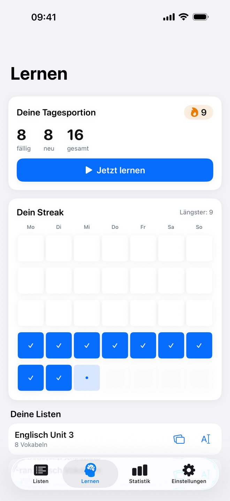
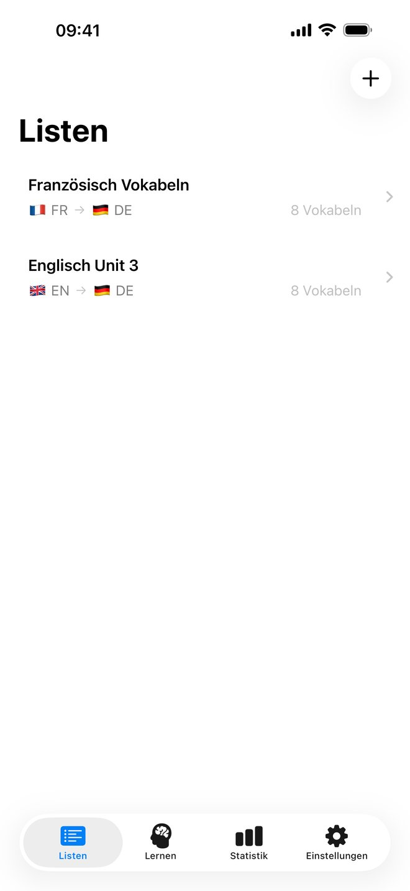
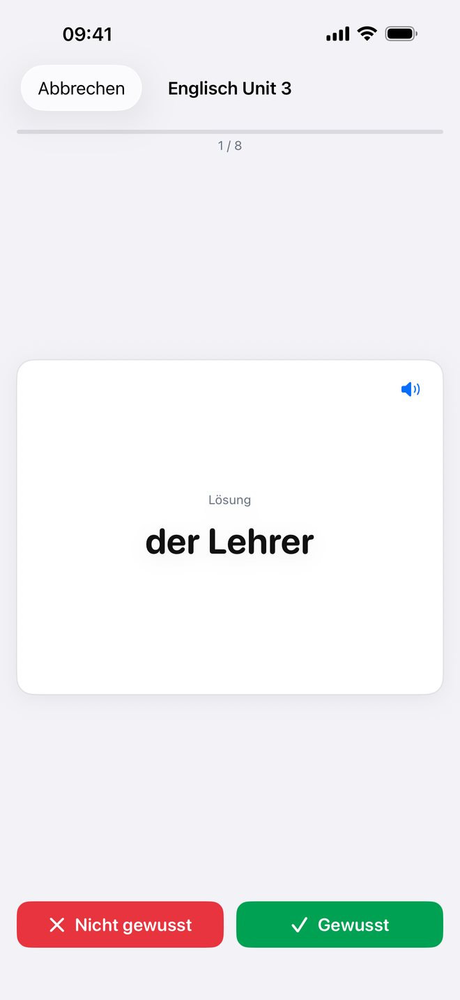
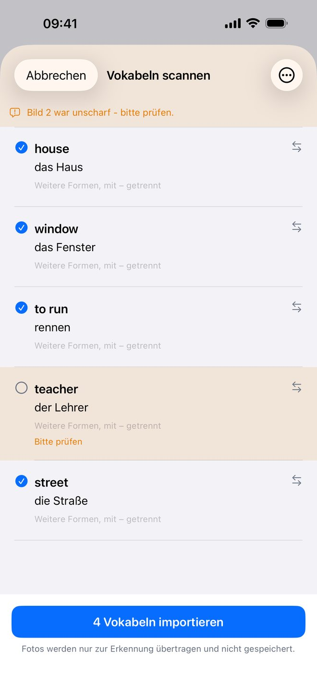
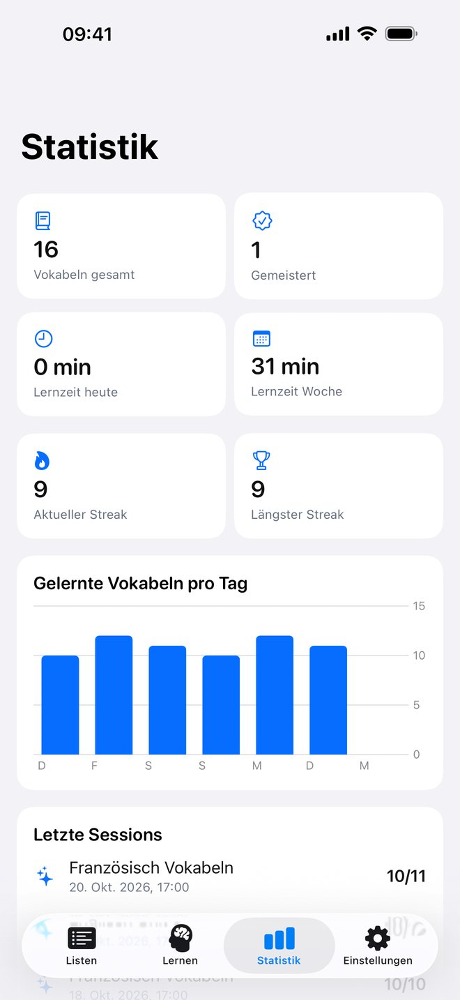

Scan statt Abtippen
Foto von der Buchseite: Die App erkennt die Paare, du prüfst sie in der Tabelle und importierst mit einem Tipp.
Buchseite fotografieren, Paare prüfen, täglich lernen. vocabily plant deine Tagesportion mit SM-2 — auf iPhone, iPad und Mac, ohne Konto.

Erfassen, wiederholen, dranbleiben. Ohne Abo, ohne Konto, ohne Ablenkung.
Foto von der Buchseite: Die App erkennt die Paare, du prüfst sie in der Tabelle und importierst mit einem Tipp.
Fällige und neue Vokabeln in einer Sitzung, passend zu deinem Tagesziel. Was du falsch hattest, kommt schneller wieder.
Sprint für neue Listen, Marathon für den Abend vor der Prüfung: tippen, bis zwei Treffer sitzen.
Prüfungstermin eintragen, die App rechnet das nötige Tagesziel — und sagt dir, wenn es knapp wird.
Kalender der letzten fünf Wochen, Fortschritt je Liste und Status — damit du siehst, was sitzt.
Lernstände wandern zwischen iPhone, iPad und Mac. Ein Kauf für alle drei Geräte, Sync optional.
Der Umweg über eine Tabellenkalkulation entfällt komplett.
Kamera öffnen, Buchseite ins Bild nehmen. Auf dem Mac geht es auch per Datei, Zwischenablage oder Drag and Drop.
Die erkannten Vokabeln erscheinen als Tabelle. Falsche Zuordnungen korrigierst du mit der Tastatur, dann importierst du.
Die Tagesportion zeigt, was heute fällig ist. Erinnerung mit der Zahl der offenen Vokabeln hält dich dabei.
Ruhig, aufgeräumt, ohne Ablenkung — gebaut für den täglichen Zehn-Minuten-Rhythmus.




Kein Konto, kein Server, auf dem deine Listen liegen. Wenn du iCloud aktivierst, läuft der Sync über deine private iCloud-Datenbank — wir haben keinen Zugriff darauf.
Weitere Antworten stehen im Support-Bereich.
vocabily kommt für iPhone, iPad und Mac — ein Kauf, alle Geräte.
Frag nach, wenn du sie vorher testen willst